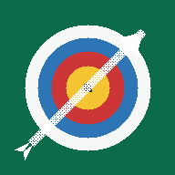

Bogen Setup
Standhöhe · Pfeilqualität · Blankschaft · Nockpunkt · Tiller
Offline wird vorbereitet …
Beim ersten Öffnen bitte kurz mit dem Internet verbunden bleiben.
Beim ersten Öffnen bitte kurz mit dem Internet verbunden bleiben.
1. Diese Seite einmal in Safari öffnen.
2. Warten, bis oben „✓ Offline bereit“ steht.
3. Safari: Teilen → Zum Home-Bildschirm.
4. Hinzufügen wählen.
Danach erscheint das Symbol „Bogen Setup“ auf dem iPad-Home-Bildschirm. Die App kann anschließend am Übungsplatz ohne Internet gestartet werden.